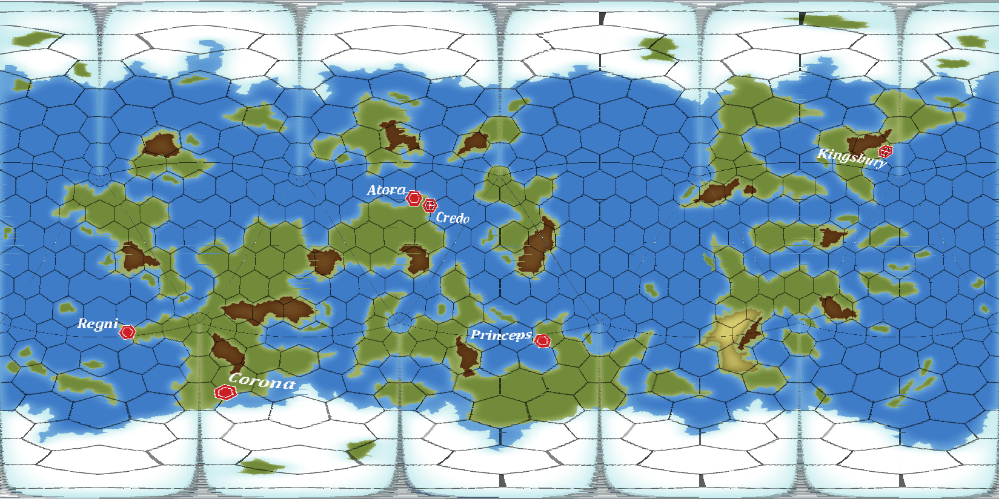

This display uses a Plate-Carrée texture and wraps it round a premade sphere:
Any Plate-Carrée will work. You can show your own custom world spinning in space.
Tutorial

Plate-Carrée (Plot kuh-RAY):
A subset of The Equirectangular map projection where The Equator is the Standard Parallel.
Icohex:
The Traveller World "Hexagon Reticulated Icosahedral Dissection" map format.
You can convertTraveller Maps to Plate-Carrée on-line.
Joshua Bell's Quick Converter is much faster and more versatile.
Thousands of Traveller World Maps are available at Jonathan Sherlock's Page.
Visit TravellerMap to choose even more.
Many Plate-Carrée images are available on-line for the Solar System Planets as well as Alien Worlds.
An essay on Planetary Cartography and Traveller.
This work is, in its entirety, a product of Human art and effort.
No part of any image, text, or code, is in any way machine generated.
It is open source, and coded in javascript. There is no tracking, or registration.
Nothing is transfered except for the images you select.
Fiery Minds Miss
Saner Owls
Because Blue is Heavier
The Traveller game in all forms is owned by Mongoose Publishing. Copyright © 1977 - 2025 Mongoose Publishing.